SmartTools アドオン解説書 ／ 全体の管理
Smart Tools Manager（スマートツールマネージャー） 解説書
版 1.0.0 ／ 2026年11月18日 ／ Blender 5.1.2 用
スマートツールマネージャーは、SmartTools 全体を管理するためのツールです。スマートツールのアドオンをたくさん入れると、サイドバー（N パネル）にタブが並びすぎて探しにくくなります。このツールでは、「ワークスペース」（作業ごとの画面の組み合わせ）と「エディター」（3D ビューポートや画像エディターなどの画面の種類）の組み合わせごとに、各スマートツールのパネルを出すか出さないかを決めます。アドオン本体を有効にしたり無効にしたりはしません。パネルの表示だけを切り替えます。ほかに、不要な作業データを除いた .blend のコピーを作る「リリース整理」も入っています。インストール、日本語化、「？」ヘルプの共通の使い方は、全体仕様書の該当の章を見てください。
1. このアドオンでできること
SmartTools 全体を管理するためのツールです。ワークスペースとエディターの組み合わせごとに、どのスマートツールのパネルを出すかを、一つの画面でまとめて決めます。
- ワークスペースとエディターの組み合わせごとに、21 本のスマートツールのパネルを「有効」「無効」で切り替えます。最初はどのツールも「有効」です。「全部有効」「全部無効」で一覧をまとめて切り替えられます。
- 各スマートツールについて、ルールの ON／OFF と、アドオン本体が有効かどうかを並べて表示します。
- 設定を設定ファイルへ保存し、Blender を起動し直しても同じ設定に戻します。
- 画面のいちばん上の帯（トップバー）に「スマートツール」ボタンを出し、そこからマネージャーの画面を開けます。ボタンは最初は出ていないので、プリファレンスのアドオンの欄で「トップバーボタン」を ON にします。
- 設定ファイルを読み直して中身を確かめ、必要な時はバックアップから戻します（再読み込み）。
- 問題が起きた時の「実行メッセージ」を表示し、全文をコピーできます。
- 「リリース整理」で、自分で選んだ不要データだけを除いた新しい .blend のコピーを作ります。元のファイルは変えません。
- モデリング用のワークスペースではモデリング系のツールだけを出し、アニメーション用ではアニメーション系だけを出したい時。
- 画像エディターやノードエディターのサイドバーに、関係の無いスマートツールのタブが出ないようにしたい時。
- 納品や共有の前に、使い終わった作業用のデータを除いた .blend のコピーを作りたい時。
ひと目で分かる例
このアドオンを使うと、画面は次のように変わります。くわしい操作は 5 章の各機能の「実例」で説明します。
実例このワークスペースで使わないツールのタブを隠す（3D ビューのサイドバーで試した様子）
マネージャーでツールを「無効」にすると、選んだワークスペースとエディターのサイドバーから、そのツールのタブがその場で消えます。サイドバーのタブを、今の作業に要る物だけにできます。日本語の画面では、一覧の列名と実際のサイドバーのタブに同じ訳名が表示されます。


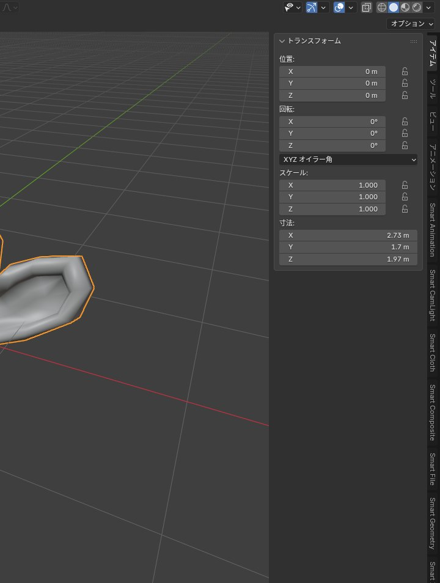
- マネージャーの画面を開きます。
- 「ワークスペース」の列で「レイアウト」、「Nパネル対応エディター」の列で「3Dビューポート」を選びます。
- 「スマートツール」の列で、隠したいツール（ここでは「Smart File」）の「有効」を押して「無効」にします。
- 画面の下の「OK」を押して閉じます。
見どころ：3D ビューのサイドバーの右端に縦に並ぶタブを見比べます。前は「Smart Composite」と「Smart Geometry」の間に「Smart File」のタブがありますが、後はそのタブが消え、下のタブが繰り上がっています。ほかのタブは残っています。最後の図のように「有効」に戻すと、タブは元どおりに並びます。
実例隠した作業用の箱を除いたコピーを作る（スザンヌと、隠した作業用の箱で試した様子）
表示もレンダーも切った作業用の箱を、そのメッシュと一緒に選んで、箱の無いコピーを作ります。開いている元のファイルは変わりません。
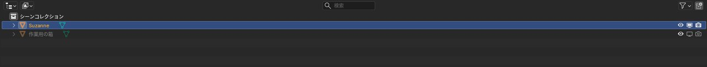
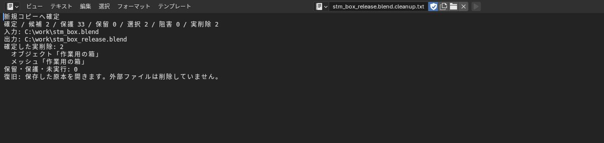
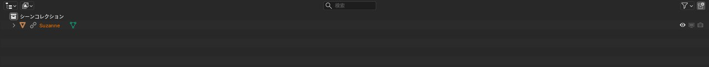
- 作業用の箱を選び、プロパティエディターのオブジェクトタブ（オレンジの四角のアイコン）の「可視性」の欄で、「表示先」の「ビューポート」と「レンダー」のチェックを両方とも外して、ファイルを保存します（アウトライナーの目のアイコンで隠すだけでは足りません）。
- マネージャーの画面で「リリース整理」を押します。
- 「対象ページ」を送り、オブジェクト「作業用の箱」とメッシュ「作業用の箱」にチェックを入れます。
- 「新規コピー」の保存先を確かめ、「コピーへ適用」を押して確認します。
見どころ：前の図のアウトライナーには「作業用の箱」がありますが、できたコピーの中には Suzanne だけが入っています。コピーの横にできる .cleanup.txt に、除いた物が「確定した実削除」として書かれます。
2. 目玉の機能
このアドオンならではの機能を、図に番号を付けて説明します。図の中の番号と、図の下の一覧の番号が対応しています。図を押すと大きく表示されます。設定の一つ一つは 5 章の各見出しで説明します。
2-1. 1 つの画面で、SmartTools 全部のパネルの表示をまとめて管理するいちばんの売り
スマートツールマネージャーは、SmartTools 全体を管理するためのツールです。21 本のスマートツールのパネルを、16 のワークスペースと 17 のエディターの組み合わせごとに、出すか隠すかを 1 つの画面でまとめて決められます。スマートツールをたくさん入れても、サイドバー（N パネル）のタブを今の作業に要る物だけにできます。
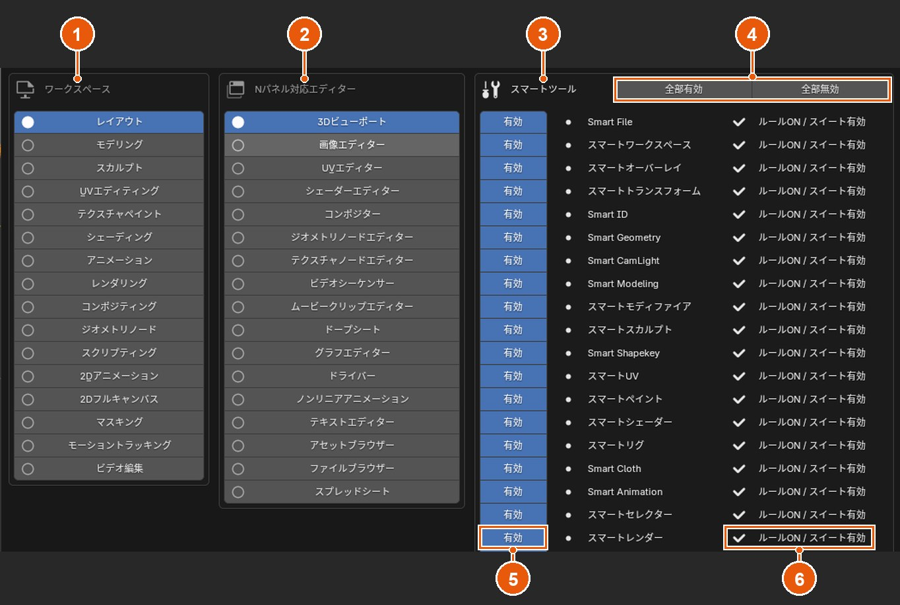
- 1「ワークスペース」：決めたいワークスペースを 1 つ選びます。「レイアウト」「モデリング」など 16 個が並びます。
- 2「Nパネル対応エディター」：決めたいエディターを 1 つ選びます。「3Dビューポート」「画像エディター」など 17 個が並びます。
- 3「スマートツール」：21 本のスマートツールが決まった順に並びます。①と②で選んだ組み合わせで、ツールごとにパネルを出すかどうかを決めます。
- 4「全部有効」「全部無効」：選んだ組み合わせのツールを、まとめて「有効」または「無効」にします。ほかの組み合わせは変わりません。
- 5「有効」／「無効」：押すたびに切り替わり、その場でサイドバーのタブが出たり消えたりします。保存が ON なら、押したその場で保存されます。
- 6状態の表示：チェックの形の「ルールON / スイート有効」は、パネルが出る状態です。漏斗の形はこの組み合わせでは出さない設定、鎖が切れた形と目を閉じた形は、アドオン本体が有効になっていない状態です。
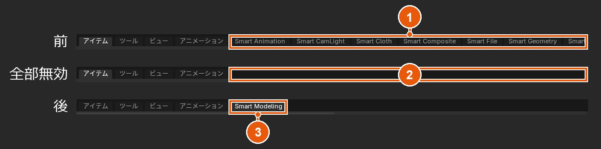
- 1前：「Smart Animation」から右へ、スマートツールのタブが並び、図の外まで続きます。
- 2「全部無効」の後：スマートツールのタブが全部消えます。残る「アイテム」「ツール」「ビュー」「アニメーション」は Blender のタブです。
- 3「Smart Modeling」：「有効」に戻した Smart Modeling のタブだけが出ます。
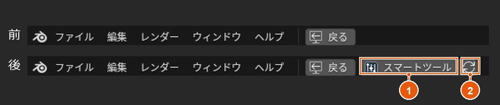
- 1「スマートツール」：押すとマネージャーの画面が開きます。「トップバーボタン」は最初は OFF なので、「常時機能切り替え」の欄で ON にします。
- 2回る矢印（スマートツールを再読み込み）：設定ファイルを 1 回読み直して中身を確かめます。各スマートツール本体は読み直しません。
- トップバーの「スマートツール」を押して、マネージャーの画面を開きます（プリファレンスの「スマートツールマネージャーを開く」でも開けます）。
- 左の列でワークスペースを、真ん中の列でエディターを選びます。
- 隠したいツールの「有効」を押して「無効」にします。少しだけ残したい時は、「全部無効」を押してから、残すツールを「有効」にします。
- 画面の下の「OK」を押して閉じます。
- 変わるのはパネルの表示だけです。アドオン本体を有効・無効にするのは、プリファレンスのアドオン一覧です。
- 最初は、どの組み合わせでも、どのツールも「有効」です。
- 切り替えは押したその場で効きます。「OK」で閉じても「キャンセル」で閉じても、元には戻りません。
- 「Nパネル状態保存」は最初から ON で、切り替えはその場で設定ファイルに保存されます。
くわしい設定：5-4. マネージャーの画面の上の帯、5-7. 「スマートツール」の列、5-3. トップバーの「スマートツール」ボタン
2-2. ワークスペースとエディターを切り替えるだけで、出るタブも切り替わる図で見る
ルールはワークスペースとエディターの組み合わせごとに覚えています。ワークスペースのタブを切り替えるだけで、サイドバーのタブもその作業用のツールに切り替わります。同じワークスペースの中でも、3D ビューポートと画像エディターで別々のツールを出せます。
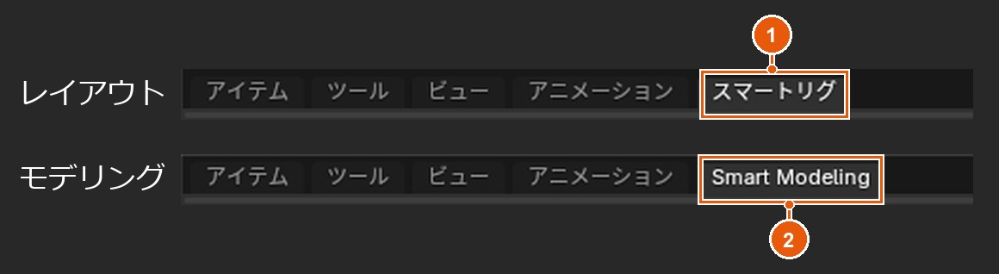
- 1「スマートリグ」：「レイアウト」では、スマートツールのタブは Smart Rig（スマートリグ）だけです。
- 2「Smart Modeling」：「モデリング」へ切り替えると、タブは Smart Modeling だけになります。
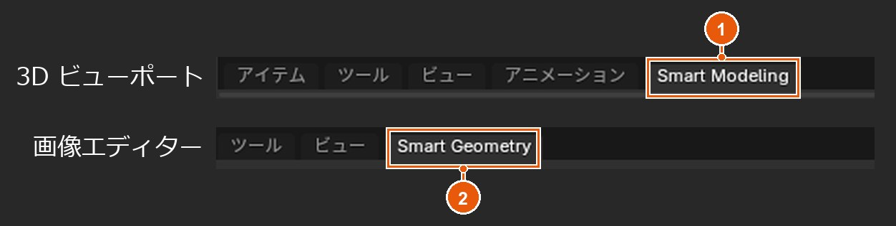
- 1「Smart Modeling」：3D ビューポートでは Smart Modeling が出て、Smart Geometry は出ません。
- 2「Smart Geometry」：画像エディターでは逆に、Smart Geometry が出て Smart Modeling は出ません。
- 「ワークスペース」の列で「レイアウト」を選び、「全部無効」を押してから、Smart Rig だけを「有効」にします。
- 「モデリング」を選び、「全部無効」を押してから、Smart Modeling だけを「有効」にします。
- 「OK」を押し、画面の上のタブで「Layout」と「Modeling」を切り替えます。
- エディターごとに変える時は、「Nパネル対応エディター」の列でエディターを選んでから、同じように「有効」「無効」を決めます。
- ワークスペースは名前で見分けます。一覧に無い名前（自分で付けた名前など）のワークスペースでは、ルールは働かず、パネルは全部出ます。
- エディターの列で決めるのは、そのエディターのサイドバーにパネルを出すかどうかです。サイドバーそのものは開いたり閉じたりしません。
- 「ソースパネルフィルター」を ON にすると、そのワークスペースのどのエディターでも「無効」のスマートツールは、アドオンごとそのワークスペースで働かなくなります。スマートツール以外のアドオンは隠れません。タブを隠すだけなら ON にしなくてもかまいません。
くわしい設定：5-5. 「ワークスペース」の列、5-6. 「Nパネル対応エディター」の列、5-2. 「常時機能切り替え」の欄
3. 準備
アドオンの入れ方・画面を日本語にする方法・N パネルと「？」ヘルプの共通の使い方は、「SmartTools 全体仕様書」にまとめています。先にそちらの 2〜5 章を読んでください。
| 入れる ZIP | SmartToolsManager_1.0.0.zip |
|---|---|
| Blender の画面での名前 | Smart Tools Manager |
| 動く Blender | 5.1.2 |
4. 画面の場所
このアドオンはサイドバー（N パネル）に自分のパネルを持ちません。入口は 2 つです。プリファレンスのアドオンの欄と、トップバーの「スマートツール」ボタンです。ボタンは最初は出ていないので、はじめにプリファレンスで ON にします。
| 出る画面 | プリファレンス（アドオンの欄）、トップバー（画面のいちばん上の帯） |
|---|---|
| モード | どのモードでも使えます |
- 「編集」メニューから「プリファレンス」を開き、「アドオン」で「Smart Tools Manager」の行を開きます（名前の左の矢印を押します）。
- 「常時機能切り替え」を押して欄を開き、「トップバーボタン」にチェックを入れます。
- 画面のいちばん上の帯（トップバー）の左側、ワークスペースのタブの後ろに「スマートツール」ボタンが出ます。次からはこれを押して開きます。「Nパネル状態保存」が ON の間は、Blender を起動し直してもボタンは出たままです。
- そのボタンのすぐ右の、矢印が回る形のアイコンは「スマートツールを再読み込み」です。
- プリファレンスの同じ欄の「スマートツールマネージャーを開く」を押しても、マネージャーの画面が開きます。

5. 機能の説明
画面の上から順に、見出しごとに説明します。見出しの右の「？」を押すと、同じ内容の説明が画面にも出ます。青い枠の「実例」は、スザンヌなどの簡単なモデルで実際に操作し、3D ビューでの変化を前と後で並べたものです。
5-1. プリファレンスのアドオンの欄
プリファレンスの「Smart Tools Manager」の行を開くと出る欄です。ここからマネージャーの画面を開き、裏で動く機能を切り替えられます。
場所「編集」→「プリファレンス」→「アドオン」→「Smart Tools Manager」の行。
| 表示 | 働き |
|---|---|
| スマートツールマネージャーを開く | マネージャーの画面を開きます。 |
| リリース整理 | 「リリース整理」の画面を開きます。 |
| 常時機能切り替え | 押すと、裏で動く機能の欄を開きます。並ぶ項目は「「常時機能切り替え」の欄」の節と同じです。マネージャーの画面と同じ設定を変えます。 |
- 「編集」メニューから「プリファレンス」を開きます。
- 「アドオン」で「Smart Tools Manager」の行を開きます。
- 「常時機能切り替え」を押して、「トップバーボタン」にチェックを入れます。
実例プリファレンスから設定を開く（プリファレンスのアドオンの欄で試した様子）
プリファレンスの「Smart Tools Manager」の行を開くと、マネージャーの画面を開くボタンと「常時機能切り替え」が出ます。
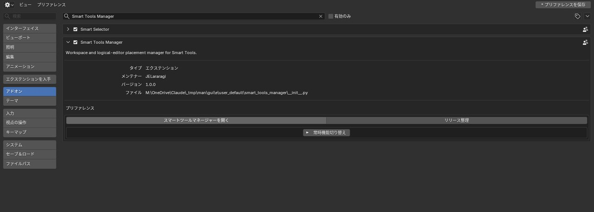
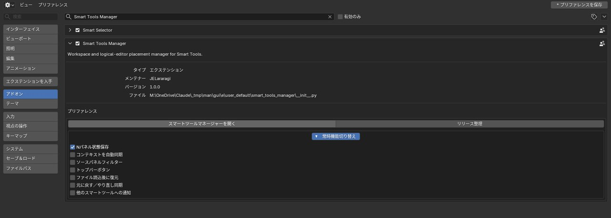
- 「編集」メニューから「プリファレンス」を開き、「アドオン」で「Smart Tools Manager」の行を開きます。
- 「常時機能切り替え」を押して欄を開きます。
見どころ：行を開くと、いちばん上に「スマートツールマネージャーを開く」と「リリース整理」が並びます。「常時機能切り替え」を押すと、「トップバーボタン」などのチェックが出ます。
5-2. 「常時機能切り替え」の欄
マネージャーの裏で動く機能を、1 つずつ入れたり切ったりする欄です。最初は閉じています。
場所マネージャーの画面の「リリース整理」のすぐ下と、プリファレンスのアドオンの欄。
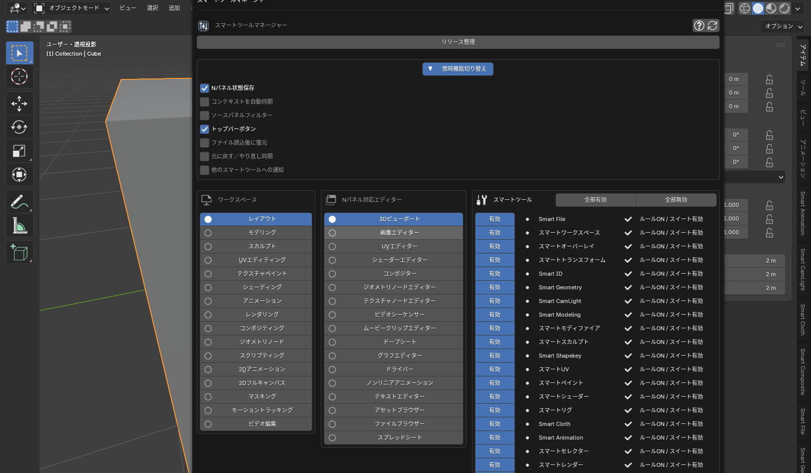
| 表示 | 働き |
|---|---|
| 常時機能切り替え | 押すたびに、この欄を開いたり閉じたりします。 |
| Nパネル状態保存 | マネージャーの設定を、Blender のユーザー設定フォルダー（config）の中の Smart_Tools_Manager/Smart_Tools_Manager_Suite.json へ保存します。最初から ON です。OFF にすると、その時に 1 回だけ保存し、その後の変更は ON に戻すまで保存されません。 |
| コンテキストを自動同期 | 「ソースパネルフィルター」も ON の時は、「有効」「無効」を切り替えたその場で、ワークスペースのアドオンの絞り込みを合わせます。OFF の時は、「OK」や更新のボタンを押した時に合わせます。定期的に動き続ける処理は始めません。 |
| ソースパネルフィルター | ON にすると、ルールに合わせて Blender のワークスペースのアドオンの絞り込みを働かせます。そのワークスペースのどのエディターでも「無効」のスマートツールは、パネルだけでなくアドオンごとそのワークスペースで働かなくなります。スマートツール以外のアドオンは隠れません。ただし、Blender の絞り込み（プロパティエディターのツールのタブの「アドオンを絞り込み」）で自分で外したアドオンは、外れたままです。ON にする前から絞り込みを使っていたワークスペースでは、その絞り込みを保ったまま、マネージャーとスマートツールだけを足します。OFF にすると、マネージャーが加えた絞り込みの変更を元に戻します。タブを隠すだけなら、ここを ON にしなくてもかまいません。 |
| トップバーボタン | トップバーに「スマートツール」ボタンを出します。最初は OFF です。 |
| ファイル読込後に復元 | .blend ファイルを開いた後に、マネージャーの設定を設定ファイルから戻します。 |
| 元に戻す／やり直し同期 | 「元に戻す」「やり直し」をした後に、マネージャーの設定を合わせ直します。 |
| 他のスマートツールへの通知 | 有効になっているスマートツールが、マネージャーの変更の知らせを受け取れるようにする仕組みを公開します。 |
- 「常時機能切り替え」を押して欄を開きます。
- 使いたい機能の名前の左のチェックを入れます。
実例絞り込みを ON にしても、ほかのアドオンは隠れない（プロパティエディターのレンダーの設定（Cycles）で試した様子）
「ソースパネルフィルター」を ON にすると、「無効」のスマートツールはワークスペースから外れます。スマートツール以外のアドオンは外れないので、Cycles のレンダーの設定などはそのまま使えます。

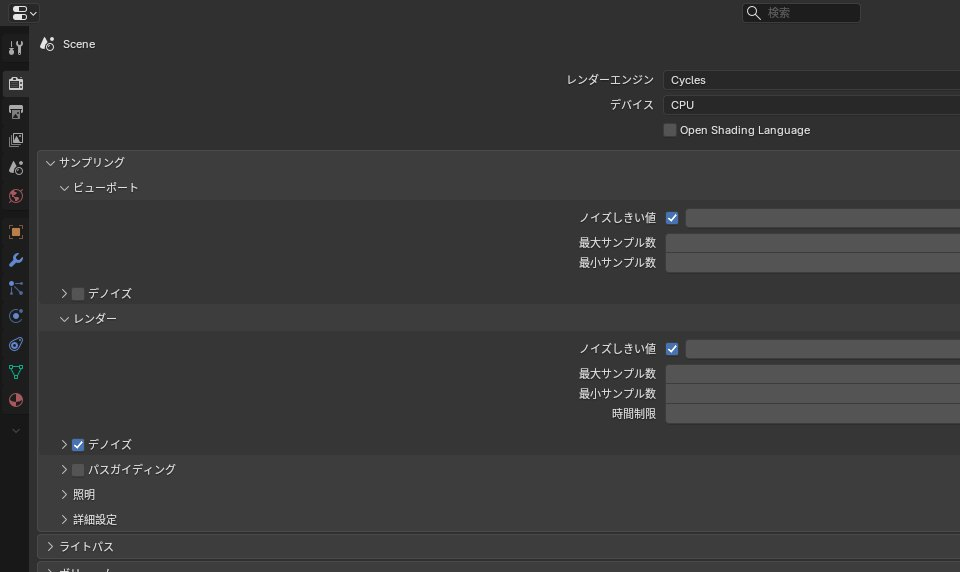
- 「レンダーエンジン」を Cycles にして、プロパティエディターのレンダーのタブを開きます。
- マネージャーの画面の「全部無効」を押します。
- 「常時機能切り替え」を開き、「ソースパネルフィルター」にチェックを入れて、「OK」を押します。
見どころ：前と後で、Cycles の設定の欄（サンプリングなど）は変わりません。Cycles もアドオンの 1 つですが、絞り込みの一覧に残っているので隠れません。
実例自分で外したアドオンは、外れたまま（プロパティエディターのレンダーの設定（Cycles）で試した様子）
「ソースパネルフィルター」が ON の間も、Blender の絞り込みで外したアドオンは一覧に戻りません。マネージャーの画面を開いても、「OK」を押しても同じです。

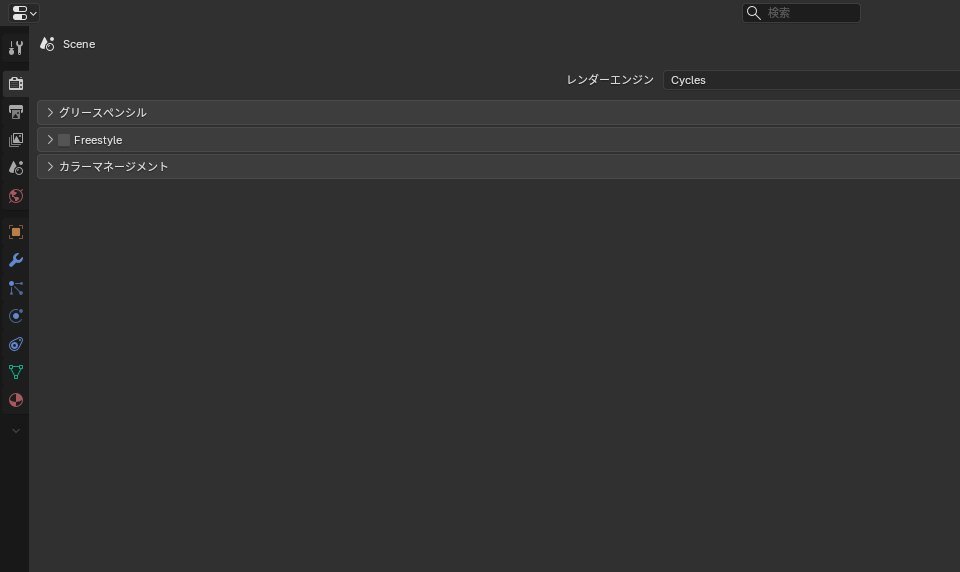

- 「レンダーエンジン」を Cycles にして、「ソースパネルフィルター」を ON にします。
- プロパティエディターのツールのタブで「ワークスペース」の欄を開き、「アドオンを絞り込み」の一覧で Cycles のチェックを外します。
- マネージャーの画面を開いて「OK」を押し、レンダーのタブに戻ります。
見どころ：Cycles の設定の欄が消えたままになります。「ソースパネルフィルター」を OFF にすると、絞り込みが解けて Cycles の設定の欄が戻ります。
5-3. トップバーの「スマートツール」ボタン
マネージャーの画面を開くボタンと、設定ファイルを読み直すボタンです。
場所画面のいちばん上の帯（トップバー）の左側、ワークスペースのタブの後ろ。「トップバーボタン」が ON の時だけ出ます。
| 表示 | 働き |
|---|---|
| スマートツール | マネージャーの画面（スマートツールマネージャー）を開きます。画面の下の「OK」を押すと閉じます。「ソースパネルフィルター」が ON なら、この時にワークスペースのアドオンの絞り込みを今の設定に合わせ直します。 |
| スマートツールを再読み込み（回る矢印のアイコン） | 設定ファイル Smart_Tools_Manager_Suite.json を 1 回読み込んで中身を確かめます。必要な時はバックアップから戻し、その結果を当てはめます。各スマートツール本体は読み直しません。 |
- プリファレンスのアドオンの欄か、マネージャーの画面の「常時機能切り替え」で、「トップバーボタン」を ON にします。
- トップバーの「スマートツール」を押します。
実例トップバーに「スマートツール」ボタンを出す（画面のいちばん上の帯（トップバー）で試した様子）
「トップバーボタン」にチェックを入れると、トップバーの左側に「スマートツール」ボタンが出ます。次からはこのボタンでマネージャーの画面を開けます。
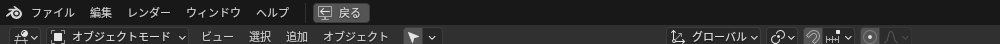
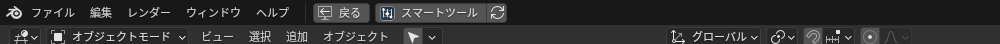
- プリファレンスの「アドオン」で「Smart Tools Manager」の行を開きます（マネージャーの画面でも同じです）。
- 「常時機能切り替え」を押して欄を開きます。
- 「トップバーボタン」にチェックを入れます。
見どころ：いちばん上の帯の「ヘルプ」の右を見ます。後の図では「スマートツール」ボタンと、右に回る矢印のアイコンが増えています。ふだんの画面では、ワークスペースのタブの後ろに出ます。
5-4. マネージャーの画面の上の帯
マネージャーの画面のいちばん上にある見出しとボタン、それに画面の下の「OK」「キャンセル」です。
場所マネージャーの画面の上の部分。
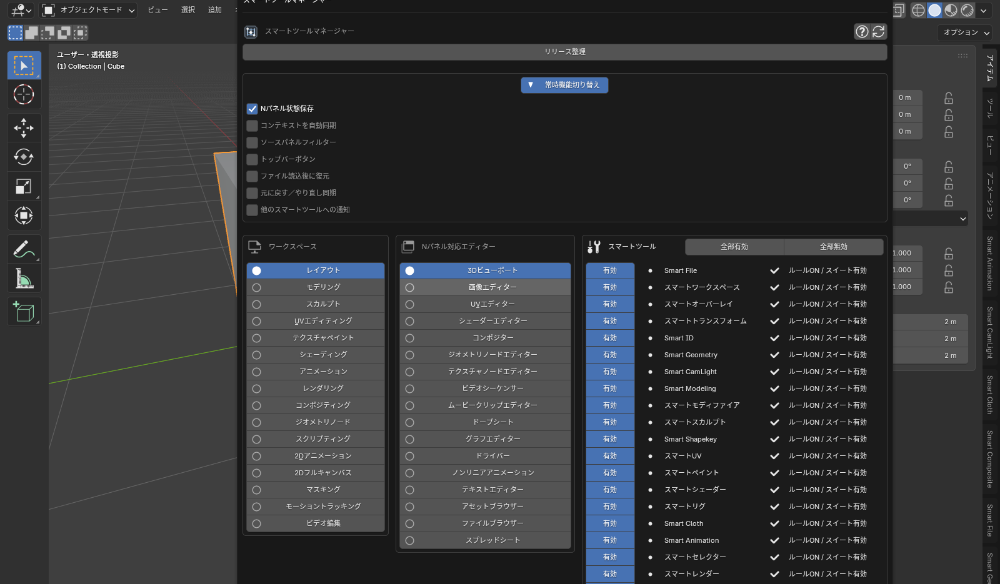
| 表示 | 働き |
|---|---|
| スマートツールマネージャー | 画面の見出しです。 |
| ？（スマートツールマネージャーのヘルプ） | マネージャーの設定・保存・復元の使い方を表示します。 |
| 回る矢印のアイコン（スマートツールマネージャーを更新） | メモリの中の設定から、マネージャーの状態表示を更新します。「ソースパネルフィルター」が ON の時は、ワークスペースのアドオンの絞り込みも合わせ直します。設定ファイルは読み直しません。各スマートツールの読み直し・有効化・無効化もしません。 |
| リリース整理 | 「リリース整理」の画面を開きます。 |
| 常時機能切り替え | 押すと、裏で動く機能の欄を開きます。並ぶ項目は「「常時機能切り替え」の欄」の節で説明します。 |
| OK／キャンセル（画面の下） | 「OK」は画面を閉じます。「ソースパネルフィルター」が ON の時は、閉じる時にワークスペースのアドオンの絞り込みを今のルールに合わせ直します。「キャンセル」はそのまま閉じます。どちらで閉じても、画面の中で切り替えた「有効」「無効」と常時機能は、押した時にもう反映されていて、元には戻りません。 |
5-5. 「ワークスペース」の列
ルールを決めたいワークスペースを 1 つ選ぶ列です。
場所マネージャーの画面の左の列。
| 表示 | 働き |
|---|---|
| レイアウト／モデリング／スカルプト／UVエディティング／テクスチャペイント／シェーディング／アニメーション／レンダリング | 押したワークスペースが選ばれ、丸の印が付きます。右の「スマートツール」の列が、そのワークスペースの設定に切り替わります。 |
| コンポジティング／ジオメトリノード／スクリプティング／2Dアニメーション／2Dフルキャンバス／マスキング／モーショントラッキング／ビデオ編集 | 同じように、押したワークスペースを選びます。全部で 16 個から選べます。 |
実例ワークスペースごとに違うタブを出す（3D ビューのサイドバーで試した様子）
「レイアウト」と「モデリング」で、別々のツールを「有効」にします。ワークスペースのタブを切り替えると、サイドバーのタブも切り替わります。
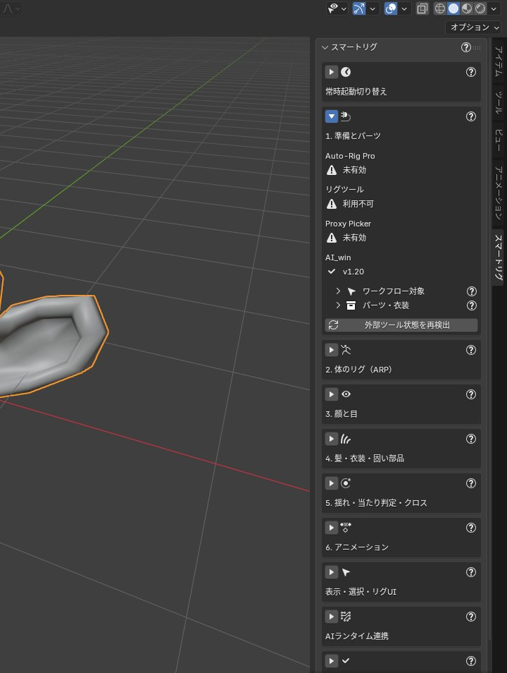
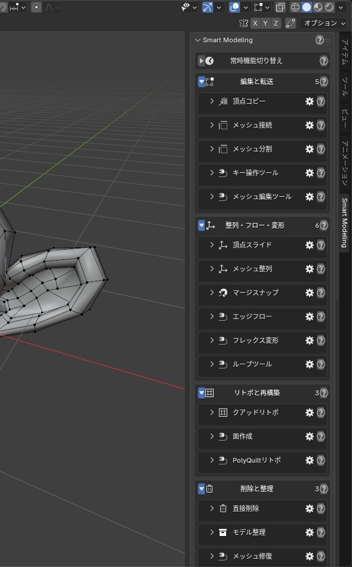
- マネージャーの画面の「ワークスペース」の列で「レイアウト」を選び、「全部無効」を押してから、Smart Rig だけを「有効」にします。
- 「ワークスペース」の列で「モデリング」を選び、「全部無効」を押してから、Smart Modeling だけを「有効」にします。
- 「OK」を押します。
- 画面の上のタブで「Layout」と「Modeling」を切り替えます。
見どころ：同じファイルの同じスザンヌでも、ワークスペースを切り替えるだけで、サイドバーの右端のタブが「スマートリグ」から「Smart Modeling」に変わります。
5-6. 「Nパネル対応エディター」の列
ルールを決めたいエディター（画面の種類）を 1 つ選ぶ列です。
場所マネージャーの画面の真ん中の列。
| 表示 | 働き |
|---|---|
| 3Dビューポート／画像エディター／UVエディター／シェーダーエディター／コンポジター／ジオメトリノードエディター | 押したエディターが選ばれ、右の「スマートツール」の列がその組み合わせの設定に切り替わります。 |
| テクスチャノードエディター／ビデオシーケンサー／ムービークリップエディター／ドープシート／グラフエディター／ドライバー | 同じように、押したエディターを選びます。 |
| ノンリニアアニメーション／テキストエディター／アセットブラウザー／ファイルブラウザー／スプレッドシート | 同じように、押したエディターを選びます。全部で 17 個から選べます。 |
実例エディターごとに違うタブを出す（3D ビューと画像エディターのサイドバーで試した様子）
同じワークスペースの中でも、エディターごとに「有効」にするツールを変えられます。

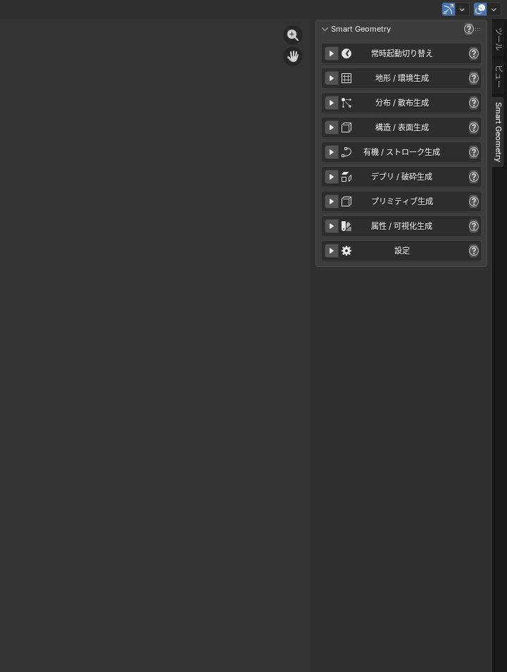
- マネージャーの画面の「Nパネル対応エディター」の列で「3Dビューポート」を選び、「全部無効」を押してから、Smart Modeling だけを「有効」にします。
- 「画像エディター」を選び、「全部無効」を押してから、Smart Geometry だけを「有効」にします。
- 「OK」を押して閉じ、3D ビューポートと画像エディターのサイドバーを見比べます。
見どころ：3D ビューポートでは Smart Modeling のタブが出て Smart Geometry が出ません。画像エディターでは逆に Smart Geometry が出て Smart Modeling が出ません。
5-7. 「スマートツール」の列
選んだワークスペースとエディターの組み合わせで、各スマートツールのパネルを出すかどうかを決める列です。
場所マネージャーの画面の右の列。
| 表示 | 働き |
|---|---|
| 全部有効／全部無効（見出しの右） | 選んだワークスペースとエディターの組み合わせで、一覧のツールをまとめて「有効」または「無効」にします。ほかの組み合わせは変わりません。 |
| 有効／無効（左のボタン） | 押すたびに切り替わります。「有効」にすると、選んだ組み合わせでそのツールのパネルが出ます。「無効」にすると隠れます。保存が ON の時は、押したその場で保存されます。 |
| ツール名 | 「Smart File」「Smart Workspace」「Smart Overlay」「Smart Transform」「Smart ID」「Smart Geometry」「Smart CamLight」「Smart Modeling」「Smart Modifier」「Smart Sculpt」「Smart Shapekey」「Smart UV」「Smart Paint」「Smart Shader」「Smart Rig」「Smart Cloth」「Smart Animation」「Smart Selector」「Smart Render」「Smart Node」「Smart Composite」の 21 本が、この順に並びます。日本語の画面では、この一覧の列名にもサイドバーのタブと同じ訳名が出ます（Smart Workspace は「スマートワークスペース」、Smart Overlay は「スマートオーバーレイ」、Smart Transform は「スマートトランスフォーム」、Smart Modifier は「スマートモディファイア」、Smart Sculpt は「スマートスカルプト」、Smart UV は「スマートUV」、Smart Paint は「スマートペイント」、Smart Shader は「スマートシェーダー」、Smart Rig は「スマートリグ」、Smart Selector は「スマートセレクター」、Smart Render は「スマートレンダー」）。 |
| ルールON / スイート有効 | チェックの形のアイコンで出ます。ルールが ON で、そのツールのアドオン本体も有効です。パネルが出る状態です。 |
| ルールOFF / スイート有効 | 漏斗（じょうご）の形のアイコンで出ます。アドオン本体は有効ですが、この組み合わせではパネルを出さない設定です。 |
| ルールON / スイート無効 | 鎖が切れた形のアイコンで出ます。ルールは ON ですが、そのツールのアドオン本体が有効になっていません。 |
| ルールOFF / スイート無効 | 目を閉じた形のアイコンで出ます。ルールも OFF で、アドオン本体も有効になっていません。 |
| エラー | そのツールについて問題が起きています。下の「実行メッセージ」を見てください。 |
- 左の列でワークスペースを選びます。
- 真ん中の列でエディターを選びます。
- パネルを隠したいツールの「有効」を押して「無効」にします。少しだけ残したい時は、「全部無効」を押してから、残すツールを「有効」にします。
- 画面の下の「OK」を押して閉じます。
実例このワークスペースで使わないツールのタブを隠す（3D ビューのサイドバーで試した様子）
マネージャーでツールを「無効」にすると、選んだワークスペースとエディターのサイドバーから、そのツールのタブがその場で消えます。サイドバーのタブを、今の作業に要る物だけにできます。日本語の画面では、一覧の列名と実際のサイドバーのタブに同じ訳名が表示されます。
- マネージャーの画面を開きます。
- 「ワークスペース」の列で「レイアウト」、「Nパネル対応エディター」の列で「3Dビューポート」を選びます。
- 「スマートツール」の列で、隠したいツール（ここでは「Smart File」）の「有効」を押して「無効」にします。
- 画面の下の「OK」を押して閉じます。
見どころ：3D ビューのサイドバーの右端に縦に並ぶタブを見比べます。前は「Smart Composite」と「Smart Geometry」の間に「Smart File」のタブがありますが、後はそのタブが消え、下のタブが繰り上がっています。ほかのタブは残っています。最後の図のように「有効」に戻すと、タブは元どおりに並びます。
実例Smart Modeling のタブだけを残す（3D ビューのサイドバーで試した様子）
「全部無効」を押してから 1 つだけ「有効」にすると、スマートツールのタブはそれだけになります。
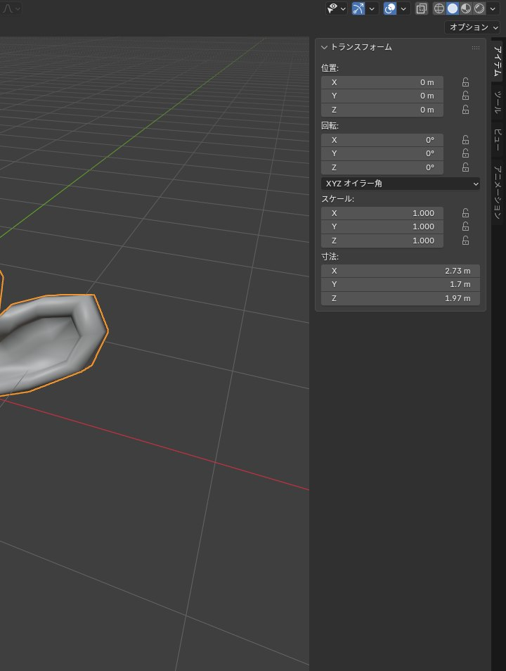
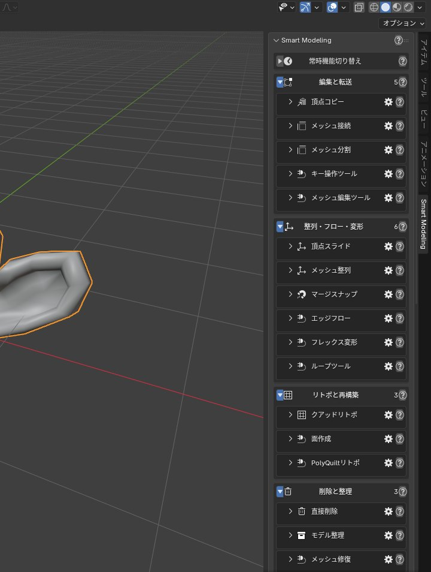
- マネージャーの画面で「レイアウト」と「3Dビューポート」を選びます。
- 「スマートツール」の見出しの右の「全部無効」を押します。
- Smart Modeling の「無効」を押して「有効」にします。
- 「OK」を押して閉じます。
見どころ：サイドバーの右端のタブの数を見ます。「全部無効」でスマートツールのタブが全部消え、「有効」にした Smart Modeling だけが戻ります。「アイテム」「ツール」「ビュー」「アニメーション」のタブは Blender の物なので残ります。
5-8. 実行メッセージ
マネージャーで問題が起きた時に出る欄と、その全文を見る画面です。
場所「スマートツール」の列の下。問題がある時だけ出ます。
| 表示 | 働き |
|---|---|
| 実行メッセージ | 問題の内容を短い文で表示します。 |
| 開く | メッセージの全文を別の小さな画面で開きます。 |
| 全文コピー | 開いた画面の上にあるボタンです。開いた画面の文より詳しい、問い合わせ用の全文（技術的な内容を含みます）をコピーします。 |
- 「開く」を押します。
- 「全文コピー」を押して、問い合わせの文などに貼り付けます。
5-9. リリース整理
今の .blend から、自分で選んだ不要な作業データだけを除いた新しいコピーを作る画面です。開いている元のファイルは変えません。
場所マネージャーの画面の「リリース整理」で開きます。
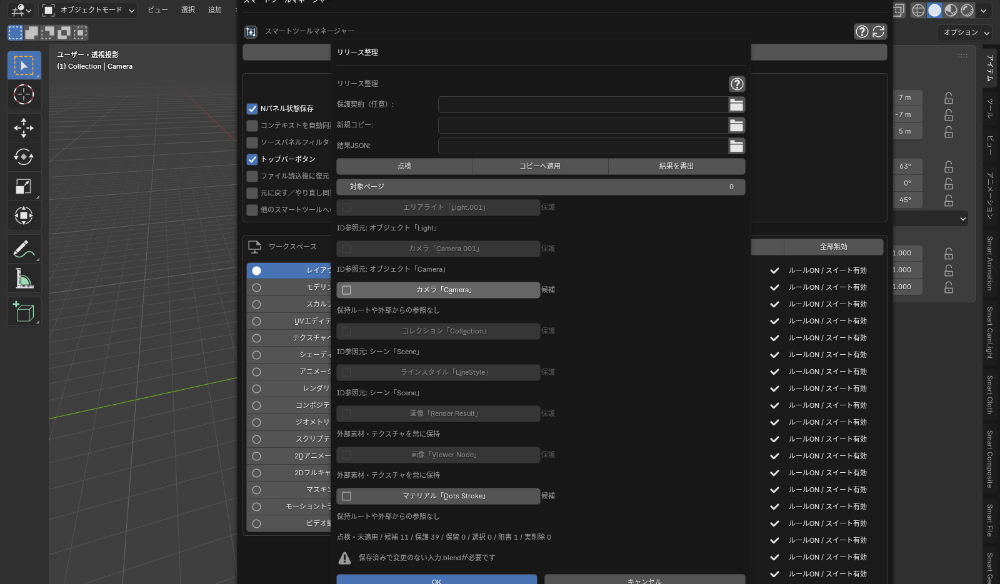
| 表示 | 働き |
|---|---|
| ？（リリース整理ヘルプ） | 対象・手順・戻し方・できないことを表示します。 |
| 保護契約（任意） | 消してはいけない物を書いた JSON ファイルを指定します。使える項目は preserve_names、preserve_ids、preserve_all_for_dynamic_scripts だけです。指定した後に「点検」を押すと読み込まれます。無くても使えます。preserve_all_for_dynamic_scripts を使うとスクリプトの阻害は消えますが、全部のデータを残すので、選べる候補は無くなります。 |
| 新規コピー | 整理したコピーを保存する先です。保存済みのファイルなら、元の名前に _release を付けた名前が最初から入ります。 |
| 結果JSON | 結果を書き出す先です。保存済みのファイルなら、元の名前に _cleanup を付けた名前が最初から入ります。 |
| 点検 | データを変えずに、ファイルの中身と参照の様子を調べ直します。チェックはすべて外れます。画面を開いた時にも自動で点検されます。 |
| コピーへ適用 | 確認の後、チェックした物を除いた整理済みのコピーを新しく作ります。1 つ以上チェックが必要です。コピーは裏で別の Blender を動かして作るので、パソコンの空きメモリが 10 GiB 以上要ります。コピーの横に、結果を書いた .cleanup.json と .cleanup.txt もできます。すでにあるファイルは上書きしません。 |
| 結果を書出 | 点検と削除の結果を、JSON と、画面の言語で読める TXT に書き出します。すでにあるファイルは上書きしません。 |
| 対象ページ | データの一覧のページを送ります。1 ページに 8 行ずつ並びます（最大 1500 ページ）。 |
| 各行のチェックと「候補」「保護」「保留」 | 各行には、データの種類と名前が「カメラ「Camera」」「メッシュ「名前」」の形で出ます。リンクのデータには「（リンク: ファイル名）」が付きます。「候補」の行だけチェックできます。「保護」「保留」の行は灰色で、選べません。各行の下に理由が出ます。チェックにマウスを重ねると、理由がすべて出ます。使っていないデータは保存ファイルに入らないので、保存済みで変更のないファイルでは「保留」になります（コピーにも入りません）。保存していないファイルでは「候補」に見えます。オブジェクトは、「ビューポート」と「レンダー」の表示を両方とも切った物だけが「候補」になります。切る場所は、プロパティエディターのオブジェクトタブ（オレンジの四角のアイコン）の「可視性」の欄にある「表示先」の「ビューポート」と「レンダー」のチェックです（アウトライナーのフィルターの「制限の切り替え」で出せる、モニターとカメラのアイコンでも切れます）。アウトライナーの目のアイコンで隠しただけでは「保護」のままです。 |
| いちばん下の集計の行（例：「点検・未適用 / 候補 2 / 保護 5 / 保留 0 / 選択 0 / 阻害 0 / 実削除 0」） | 今の状態と数をまとめて出します。「候補」「保護」「保留」は、一覧の全部の行の数です。「選択」は、チェックを入れた行の数です。「阻害」は「コピーへ適用」を止めている問題の数で、0 でないと適用できません。保存していないファイルや、保存の後に変えたファイルでは「阻害」が 1 以上になります。「実削除」は、実際に除いた数です。 保存が完了してから点検してください。保存直後に台本から点検と適用を同時に呼ぶと、未保存変更として安全のため止まる場合があります。 |
| 阻害の行（集計の行の下） | 阻害がある時、集計の行の下に内容を 3 件まで出します。残りは「結果を書出」で読めます。例：保存していないファイルでは「保存済みで変更のない入力.blendが必要です」と出ます。 |
| OK／キャンセル（画面の下） | どちらも画面を閉じるだけです。整理済みのコピーは「コピーへ適用」を押した時にだけ作られます。 |
- 先に元の .blend を保存します。
- 「リリース整理」を押して画面を開きます（この時に自動で点検されます）。
- 「対象ページ」を送りながら、捨ててよい作業データだけにチェックを入れます。使っていないオブジェクトは、そのデータ（メッシュなど）と一緒に選びます。
- 「新規コピー」で保存先を決め、「コピーへ適用」を押して確認します。
- 必要なら「結果を書出」で結果を残します。
実例隠した作業用の箱を除いたコピーを作る（スザンヌと、隠した作業用の箱で試した様子）
表示もレンダーも切った作業用の箱を、そのメッシュと一緒に選んで、箱の無いコピーを作ります。開いている元のファイルは変わりません。
- 作業用の箱を選び、プロパティエディターのオブジェクトタブ（オレンジの四角のアイコン）の「可視性」の欄で、「表示先」の「ビューポート」と「レンダー」のチェックを両方とも外して、ファイルを保存します（アウトライナーの目のアイコンで隠すだけでは足りません）。
- マネージャーの画面で「リリース整理」を押します。
- 「対象ページ」を送り、オブジェクト「作業用の箱」とメッシュ「作業用の箱」にチェックを入れます。
- 「新規コピー」の保存先を確かめ、「コピーへ適用」を押して確認します。
見どころ：前の図のアウトライナーには「作業用の箱」がありますが、できたコピーの中には Suzanne だけが入っています。コピーの横にできる .cleanup.txt に、除いた物が「確定した実削除」として書かれます。
実例リグの入ったファイルで、作業用の物だけを除く（スザンヌとリグで試した様子）
リグで動く体が入ったファイルでも、隠した作業用の箱だけを選べば、リグと体を残したままコピーを作れます。
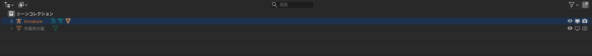
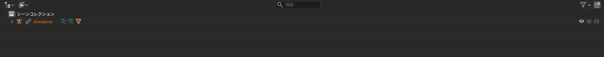
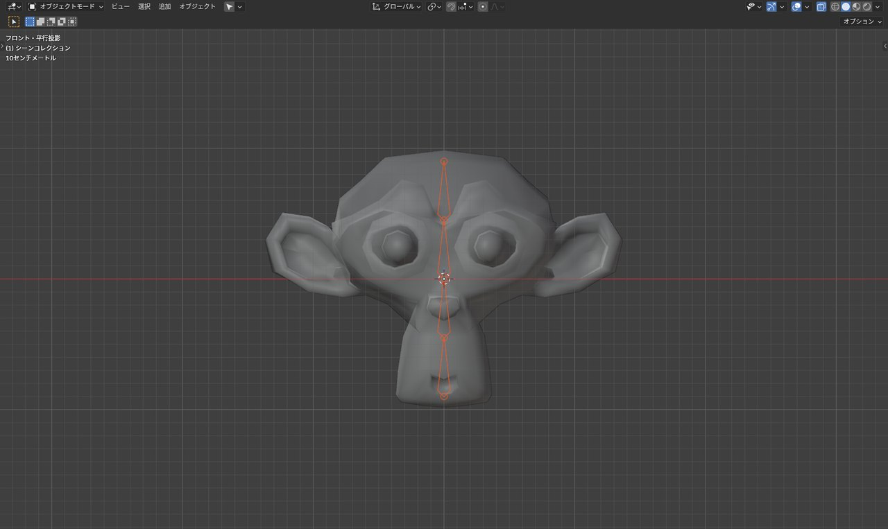
- 作業用の箱を選び、プロパティエディターのオブジェクトタブ（オレンジの四角のアイコン）の「可視性」の欄で、「表示先」の「ビューポート」と「レンダー」のチェックを両方とも外して、ファイルを保存します（アウトライナーの目のアイコンで隠すだけでは足りません）。
- ファイルを保存し、保存が完了してから「点検」を押します。保存直後に点検と適用を続けて自動実行しないでください。
- 「リリース整理」を押し、オブジェクト「作業用の箱」とメッシュ「作業用の箱」にチェックを入れます。
- 「コピーへ適用」を押して確認します。
- できたコピーを開いて、リグと体を確かめます。
見どころ：後の図は、できたコピーの中身を 3D ビューで見たものです。リグの骨と体は残っています。アウトライナーの一覧からは作業用の箱だけが消えています。
実例隠した物だけが「候補」になる（「リリース整理」の画面で試した様子）
保存したファイルで「リリース整理」を開くと、表示もレンダーも切った物とそのデータだけが「候補」になり、チェックできます。見えている物は「保護」で選べません。

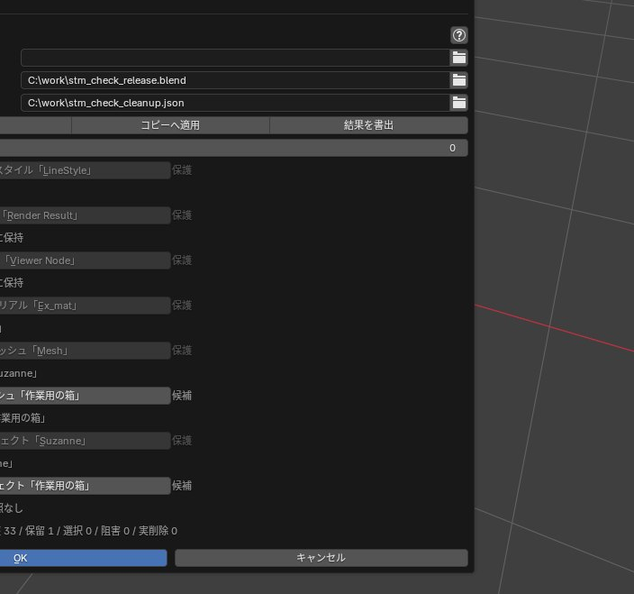
- 作業用の箱を選び、プロパティエディターのオブジェクトタブ（オレンジの四角のアイコン）の「可視性」の欄で、「表示先」の「ビューポート」と「レンダー」のチェックを両方とも外して、ファイルを保存します（アウトライナーの目のアイコンで隠すだけでは足りません）。
- 「リリース整理」を押します。
- 「対象ページ」を送って、「候補」と出ている行を探します。
見どころ：メッシュ「作業用の箱」とオブジェクト「作業用の箱」の行だけが明るく、チェックできます。スザンヌの行は灰色の「保護」です。「新規コピー」「結果JSON」には名前が最初から入ります。集計の行の「候補」は一覧の候補の行の数で、「選択」はチェックを入れた数です。「阻害」は 0 なので、チェックを入れれば「コピーへ適用」できます。
実例スクリプトが入っていると適用できない（スクリプトのテキストが入ったファイルで試した様子）
「import」などの語を含むテキストがファイルにあると、「阻害」になり、「コピーへ適用」できません。理由は画面のいちばん下に出ます。
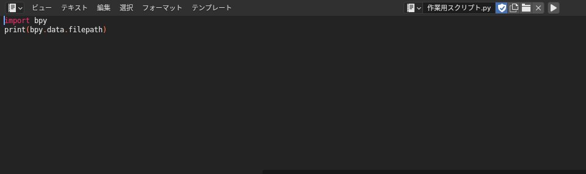
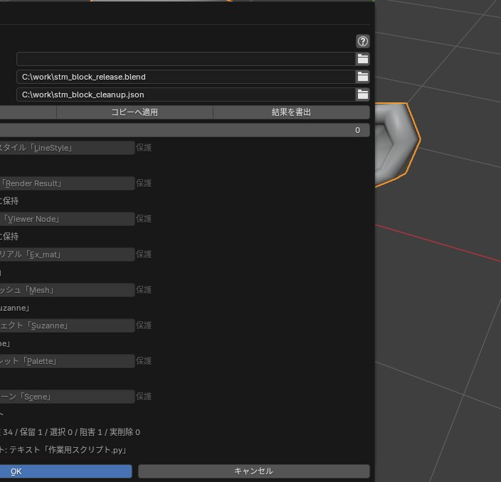
- テキストエディターにスクリプトがあるファイルを保存します。
- 「リリース整理」を押します。
- いちばん下の集計の行と、その下の行を見ます。
見どころ：集計の行の「阻害」が 1 になり、その下に原因のテキストの名前が出ます。そのテキストを除いて保存し、「点検」を押し直すと消えます。
そのほかの画面
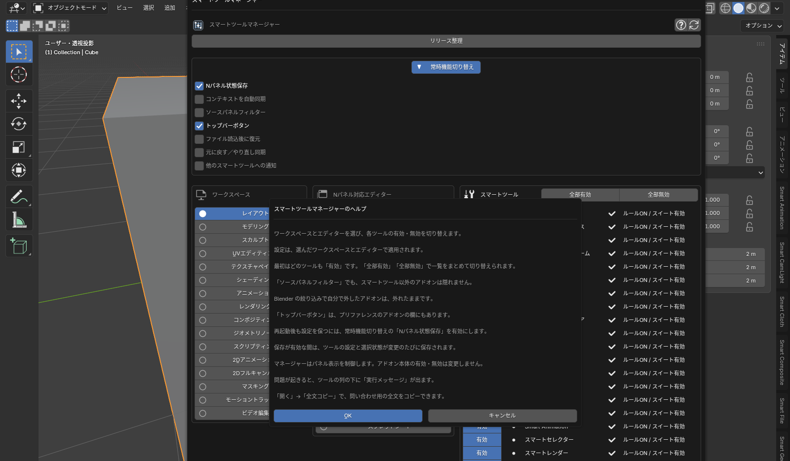
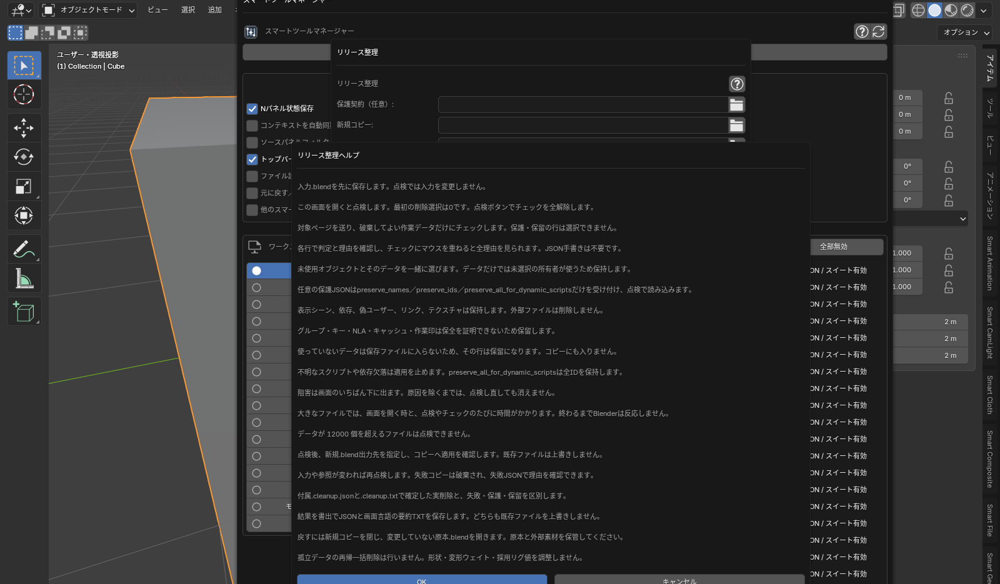
6. よく使う手順
モデリングのワークスペースの 3D ビューポートに Smart Modeling だけを出す
モデリング中のサイドバーを見やすくします。
- トップバーの「スマートツール」を押します。
- 「ワークスペース」の列で「モデリング」を押します。
- 「Nパネル対応エディター」の列で「3Dビューポート」を押します。
- 「スマートツール」の見出しの右の「全部無効」を押します。
- Smart Modeling の「無効」を押して「有効」にします。
- 「OK」を押して閉じます。
結果：モデリングのワークスペースの 3D ビューポートでは、サイドバーのスマートツールのタブが Smart Modeling だけになります。
設定ファイルから設定を読み直す
設定がおかしく見える時に、保存した設定へ戻します。
- トップバーの「スマートツール」の右にある、回る矢印のアイコンを押します。
結果：設定ファイルを確かめて読み直し、その内容を当てはめます。画面の下に結果の知らせが出ます。
不要なデータを除いた .blend のコピーを作る
納品や共有の前に、使い終わった作業データを除きます。
- 元の .blend を保存します。
- マネージャーの画面で「リリース整理」を押します。
- 「候補」の行から、捨ててよい物だけにチェックを入れます。オブジェクトは、そのメッシュなどと一緒に選びます。
- 「新規コピー」の保存先を確かめ、「コピーへ適用」を押して確認します。
結果：指定した場所に整理済みのコピーができます。元のファイルはそのままです。
問題が起きた時の文を集める
問い合わせのために、問題の全文を取り出します。
- マネージャーの画面の「実行メッセージ」の「開く」を押します。
- 「全文コピー」を押します。
結果：メッセージの全文がクリップボードに入ります。
7. 困った時
- サイドバー（N パネル）に「スマートツールマネージャー」のタブが見つかりません。
- このアドオンはサイドバーにパネルを持ちません。トップバーの「スマートツール」から開いてください。ボタンが出ていない時は、プリファレンスのアドオンの欄で「トップバーボタン」を ON にします。
- どのツールも最初から「有効」なので、1 つずつ切るのが大変です。
- 「スマートツール」の見出しの右の「全部無効」を押してから、残すツールだけを「有効」にします。
- 「有効」にしたのに、ツールのパネルが出ません。
- 状態の表示が「ルールON / スイート無効」なら、そのツールのアドオン本体が有効になっていません。プリファレンスのアドオン一覧で有効にしてください。また、今いるワークスペースとエディターが、マネージャーで選んだ組み合わせと同じか確かめてください。サイドバーが閉じている時は N キーで開きます。
- マネージャーで「無効」にすると、アドオンが止まりますか。
- 止まりません。マネージャーが変えるのはパネルの表示だけで、アドオン本体の有効・無効は変えません。
- Blender を起動し直すと設定が消えます。
- 「常時機能切り替え」の「Nパネル状態保存」が ON になっているか確かめてください。ON の間は、変更のたびに設定ファイルへ保存されます。
- 「リリース整理」で、選びたい行にチェックが入りません。
- 「保護」「保留」と出ている行は選べません。チェックにマウスを重ねると理由が出ます。
- 「リリース整理」で元のファイルは変わりますか。
- 変わりません。点検では何も変えず、「コピーへ適用」は新しいファイルを作ります。すでにあるファイルも上書きしません。
- 「コピーへ適用」を押しても、コピーが作られません。
- 画面の下の集計の行で「阻害」が 0 か確かめてください。阻害の内容はその下に出ます。保存していない時や、保存の後に変えた時は、保存してから「点検」を押し直します。スクリプトのテキストが原因の時は、点検し直しても消えません（テキストを除いてから保存するか、適用をあきらめます）。また、「新規コピー」に、まだ無い .blend の名前を入れてください（元のファイルと同じ名前や、横の .cleanup.json がすでにある名前も使えません）。「新規コピー」のフォルダーが無い時も作れません（画面にそう出ます）。パソコンの空きメモリが 10 GiB より少ない時も作れません。ほかのアプリを閉じてから、もう一度押してください。拒否された後は、保存先を直してそのまま押し直せます。適用に成功した後にもう一度コピーを作る時は、先に「点検」を押します。
- 「阻害が残っているため適用できません」と「入力または参照が変わりました」は、どう違いますか。
- 「阻害が残っているため適用できません」は、画面の阻害の行の問題を解くまで適用できないという意味です。「入力または参照が変わりました。点検し直してください」は、点検の後にファイルや参照が変わったという意味なので、「点検」を押し直して選び直します。
- 「ソースパネルフィルター」を ON にしたら、スマートツールのタブが全部消えました。
- そのワークスペースのどのエディターでも「有効」のツールが無い時は、スマートツールのタブは全部消えます。スマートツール以外のアドオンは、自分で絞り込みから外した物を除いて隠れません。出したいツールを「有効」にすると戻ります。
- 「ソースパネルフィルター」が ON の間に、Blender の絞り込みで自分で外したアドオンは戻りますか。
- 戻りません。マネージャーの画面を開いても、「OK」を押しても、外れたままです。使いたくなったら、「アドオンを絞り込み」の一覧でチェックを入れ直します。「ソースパネルフィルター」を OFF にして絞り込みが解けても使えます。
- 「コピーを破棄しました」と出て、コピーができません。
- 指定した保存先の横にできる .cleanup.txt に理由が書かれています。元のファイルは変わっていません。理由を直してから「点検」を押して選び直し、もう一度適用します。
アドオンが出ない・日本語にならない、など全部のアドオンに共通のことは、全体仕様書の「困った時」を見てください。
8. 用語集
- ワークスペース
- 画面の上のタブ（レイアウト、モデリングなど）で切り替える、作業ごとの画面の組み合わせです。
- エディター
- 3D ビューポート、画像エディターなどの、画面の 1 区画の種類です。
- N パネル（サイドバー）
- エディターの右側に出る縦長の欄です。N キーで開け閉めします。スマートツールのパネルはここにタブで並びます。
- スイート
- SmartModeling Suite などの、スマートツールの各アドオン本体のことです。
- ルール
- ワークスペースとエディターの組み合わせごとに、各ツールのパネルを出すかどうかを決めた設定です。
- ワークスペースのアドオンの絞り込み
- ワークスペースごとに、働かせるアドオンを絞り込む Blender の仕組みです。「ソースパネルフィルター」が ON の時、マネージャーはこれを設定に合わせます。
- 設定ファイル
- Blender のユーザー設定フォルダー（config）の中の Smart_Tools_Manager/Smart_Tools_Manager_Suite.json です。マネージャーの設定が入ります。
- 保護契約
- リリース整理で消してはいけない物を書いた JSON ファイルです。使わなくてもかまいません。
- 候補／保護／保留
- リリース整理の判定です。「候補」は捨ててよいと確かめられた物、「保護」は残す物、「保留」は安全と確かめられないので選べない物です。
- 偽ユーザー
- 使われていなくても保存時に消えないように、データに付ける印です。
9. 付録：版と確認値・できないこと
| アドオン | Smart Tools Manager（smart_tools_manager） |
|---|---|
| 版 | 1.0.0 |
| ZIP | SmartToolsManager_1.0.0.zip |
| 大きさ | 84,053 バイト |
| SHA256 | 744fbb33fb262554dada5a1d083142f83361af472506ebe3b6a8fdaa2c8acee8 |
できないこと・注意
- このアドオンは、サイドバー（N パネル）に自分のパネルを出しません。画面を開くのはトップバーの「スマートツール」ボタンか、プリファレンスのアドオンの欄からです。
- パネルの表示だけを切り替えます。アドオン本体の有効・無効、登録、読み直しはしません。
- サイドバーそのものを開いたり閉じたりはしません。
- ルールを決められるのは、一覧にある 16 のワークスペース、17 のエディター、21 本のスマートツールだけです。
- リリース整理は、孤立したデータをまとめて消す処理はしません。外部のファイルは消さず、すでにあるファイルを上書きしません。
- リリース整理で、元のファイルや参照の様子が変わった時は、もう一度「点検」が必要です。
- リリース整理の「コピーへ適用」は、保存してあり、保存の後に変えていない .blend でだけ使えます。また、パソコンの空きメモリが 10 GiB 以上ある時だけ使えます。
- スクリプトのテキストや、スクリプトらしい語（import、bpy など）を含むテキストがあるファイルでは、「コピーへ適用」できません。
- データが 12000 個を超えるファイルは、リリース整理で点検できません。
- スマートツールを Blender の起動の後から有効にした時は、マネージャーの画面を開くか、ルールを切り替えるまで、そのツールのタブにルールが効かないことがあります。起動し直すと効きます。
- マネージャーやヘルプのダイアログを開いたままアドオンを無効にした場合、ダイアログを閉じてから解除を完了します。解除待ちの間に「OK」を押しても設定は追加で適用しません。タブの表示を切り替える操作とは別です。
Smart Tools Manager 解説書 v1.0.0 ／ 2026-11-18 作成